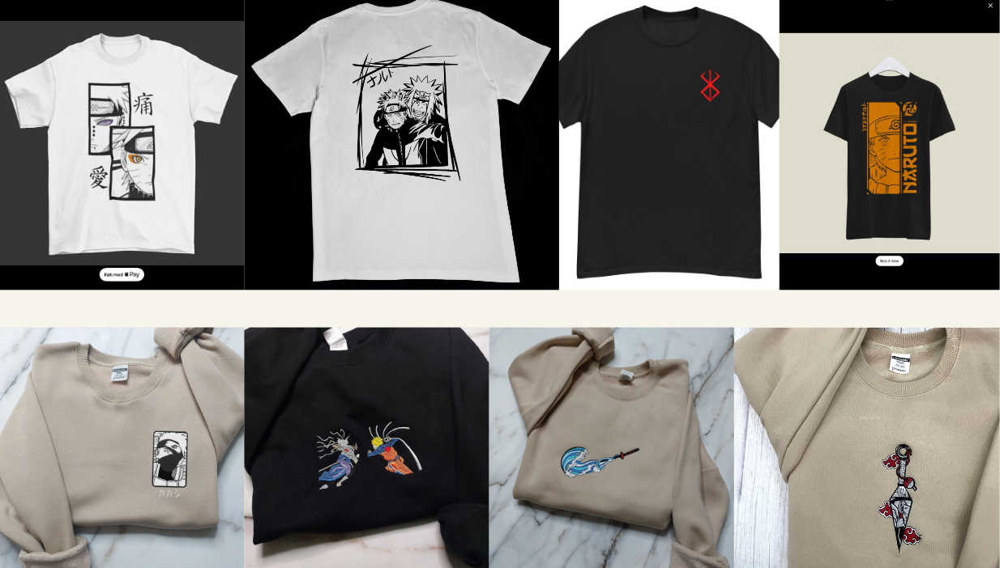
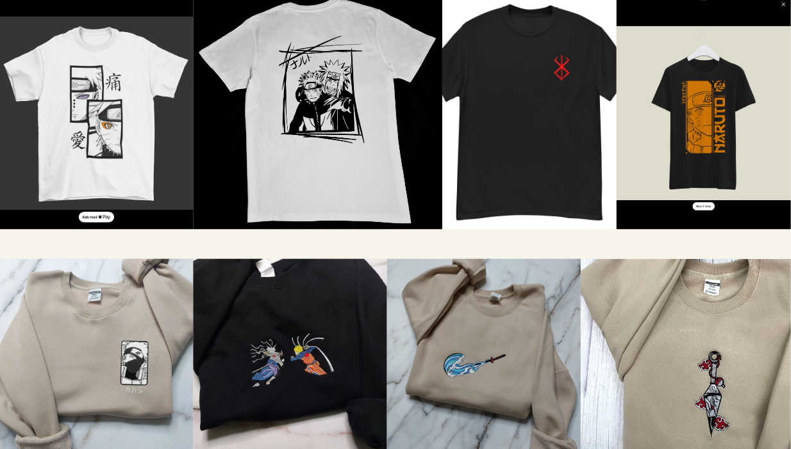
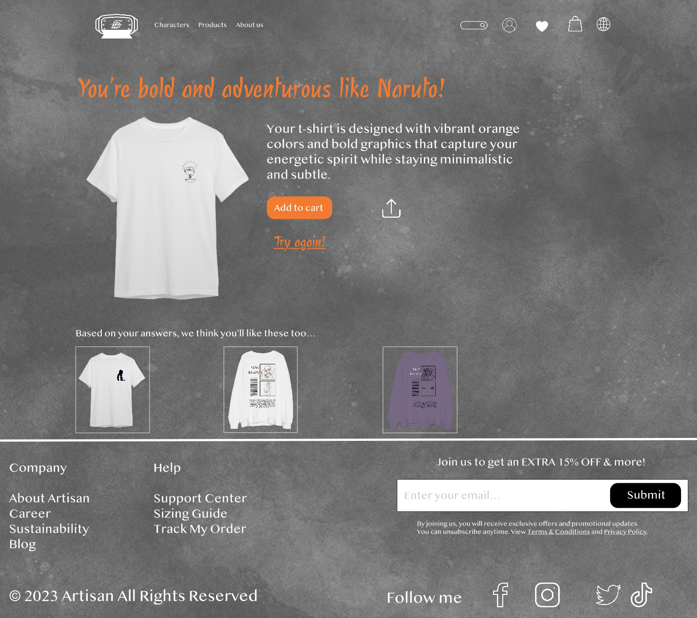

About the track
Vi blev introduceret til basale udviklingsmetoder, der skulle hjælpe med ens brainstorming, koncept
og prototype. Vi havde meget fokus på brugeroplevelsen og dette afspejles bl.a. via introduktionen
af Desk research, Surveys, Observation, Interviews og Tests.
Selve prototypen blev brugt i det nye program Adobe XD, hvor vi lærte om kreere et udkast til en
fungerende hjemmeside uden kodning via forbinding af artboards.
Selve forløbet var inddelt i
forskellige faser:
- Research
- Sketching
- Prototype
- Test af prototype
- Pitch
Link til Pitch
My Process
Anvendelse af basale udviklingsmetoder og -modeller, der kickstartede processen ift. prototypen.


Valgte stilart: Minimalisme
Emne: Naruto
Jeg valgte Minimalisme for at simplicificere mit tøj design, da jeg selv og via min survey så en høj
interresses i mere diskret Anime relateret tøj. Udfra mit styletile, så ville jeg dermed lege lidt
med noget tekstur (vandfarve baggrund) og sillhuetter/lineart som min primære stilart.
 


Nedenfor ser du et eksempel på et af quiz-resultaterne fra hjemmesiden, som fik mange "stemmer" via øvelsen heat map grundet den gode brugeroplevelse, hvor man interegere mere med dem og personilisere det mere.
